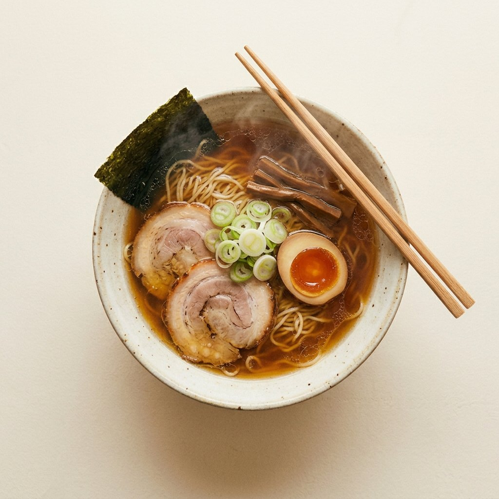
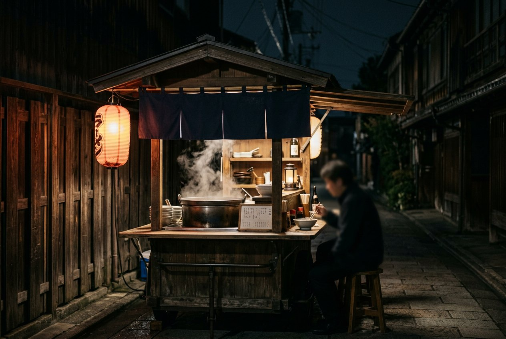
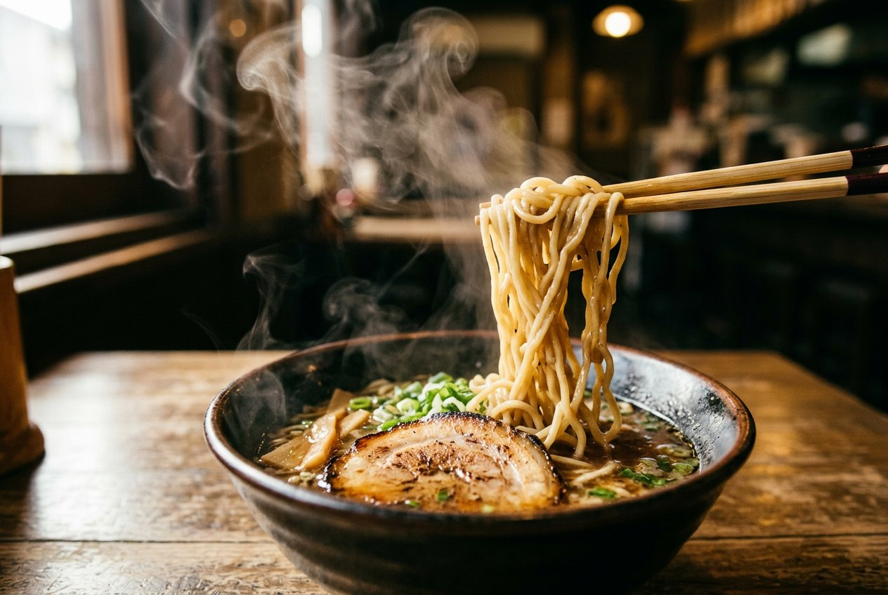

A short history
A bowl that took a century to get simple.
Ramen is not ancient. It arrived in Japan as a Chinese noodle soup barely more than a hundred years ago, was rebuilt by port cities, war, cheap wheat and street carts, and only recently became a craft people queue an hour for.
Four things in every bowl: broth, tare, noodles, toppings. Everything else is regional argument.

Arrival by port
When Japan reopened its ports in the second half of the 19th century, Chinese merchants and cooks settled in Yokohama, Kobe and Nagasaki. In their kitchens was a plain, everyday thing: wheat noodles in a savoury broth.
The Japanese called it shina soba, and later chuka soba — “Chinese noodles.” The word ramen came much later and won by accident, helped along by radio, instant packets and shop signs.
In 1910 a restaurant in Tokyo's Asakusa district, Rairaiken, hired Chinese cooks and put the dish in front of a Japanese crowd. It is usually named as the first ramen shop, and the soy-flavoured chicken broth it served is still recognisable as Tokyo-style shoyu ramen today.

Wheat, rubble and carts
The dish became Japanese in the years after 1945. Rice was scarce; imported American wheat flour was not. Black markets and street stalls turned that flour into noodles, and demobilised men with no work turned a cart, a pot and a lantern into a living. Ramen stopped being a restaurant novelty and became what you ate late, cheap, standing up.
Then it scaled. In 1958 Momofuku Ando fried and dried a noodle block and sold it as Chikin Ramen; in 1971 the same company put it in a foam cup. Instant ramen carried the word around the world — and quietly set up the contrast that the shops now trade on: two minutes in a cup, or twelve hours in a stockpot.
Timeline
Arrival & the street · 1859–1955
- 1859
Yokohama opens to foreign trade. A Chinatown forms, and with it the first kitchens serving Chinese wheat-noodle soup in Japan.
- 1884
A restaurant in Hakodate advertises nankin soba — among the earliest written records of the dish on a Japanese menu.
- 1910
Rairaiken opens in Asakusa, Tokyo, with Chinese cooks and a soy-and-chicken broth. Conventionally counted as the first ramen shop.
- 1945–55
Postwar scarcity, imported wheat and thousands of yatai carts turn ramen into everyday street food.
Industry & craft · 1958–2016
- 1958
Nissin's Chikin Ramen: the noodle block is flash-fried, dried and sold in a bag. Instant ramen is born.
- 1971
Cup Noodles. Ramen becomes portable, global, and a word everyone knows.
- 1980s–90s
Regional styles become a subject in their own right — Sapporo miso, Hakata tonkotsu, Kitakata, Wakayama. A ramen museum opens in Shin-Yokohama in 1994.
- 2016
Tokyo's Tsuta becomes the first ramen shop awarded a Michelin star. Street food, with a tasting-menu obsession behind it.
Anatomy of a bowl
Broth — the body
Bones, water, time. Chicken and pork for clear chintan; a hard rolling boil for milky paitan and tonkotsu. It carries texture, not primary salt.
Tare — the seasoning
A concentrated base spooned into the empty bowl: soy (shoyu), salt (shio) or fermented soybean paste (miso). This is where a shop's signature actually lives.
Noodles — the point
Wheat, water, salt and kansui — alkaline mineral water, which gives ramen noodles their yellow tint, springy bite and faint smell. Straight or wavy, thin or thick, matched to the broth.
Toppings — the punctuation
Chashu pork, a marinated ajitama egg, scallions, nori, menma bamboo shoots, bean sprouts, corn and butter up north. Restraint is the house style.
Regions, briefly

Tokyo — soy-seasoned chicken and dashi broth, medium wavy noodles. The original template.
Sapporo — miso tare, lard sealing in the heat, sweetcorn and butter against a Hokkaido winter.
Hakata (Fukuoka) — tonkotsu: pork bones boiled hard for hours into an opaque, collagen-heavy broth, with thin straight noodles you order firm and then refill (kaedama).
Kitakata, Wakayama, Onomichi — and a hundred more towns, each convinced theirs is the reference version.
Next: build one at home, then find someone who does it better than you.